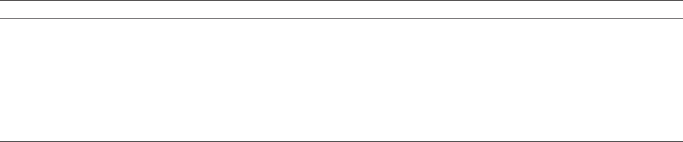

Hindawi Publishing Corporation
Advances in Human-Computer Interaction
Volume , Article ID , pages
http://dx.doi.org/.//
Review Article
Assessment in and of Serious Games: An Overview
Francesco Bellotti,
1
Bill Kapralos,
2
Kiju Lee,
3
Pablo Moreno-Ger,
4
and Riccardo Berta
1
1
Department of Naval, Electric, Electronic and Telecommunications Engineering, University of Genoa,
Viaall’OperaPia11/a,16145Genoa,Italy
2
Faculty of Business and Information Technology, University of Ontario Institute of Technology, 2000 Simcoe Street North,
Oshawa, Canada L1H 7K4
3
Department of Mechanical and Aerospace Engineering, Case Western Reserve University, 10900 Euclid Avenue,
Cleveland, OH 44106, USA
4
Faculty of Computer Science, Universidad Complutense de Madrid, Ciudad Universitaria, 28040 Madrid, Spain
Correspondence should be addressed to Francesco Bellotti; franz@elios.unige.it
Received May ; Revised January ; Accepted February
Academic Editor: Armando Bennet Barreto
Copyright © Francesco Bellotti et al. is is an open access article distributed under the Creative Commons Attribution
License, which permits unrestricted use, distribution, and reproduction in any medium, provided the original work is properly
cited.
ere is a consensus that serious games have a signicant potential as a tool for instruction. However, their eectiveness in terms
of learning outcomes is still understudied mainly due to the complexity involved in assessing intangible measures. A systematic
approach—based on established principles and guidelines—is necessary to enhance the design of serious games, and many studies
lack a rigorous assessment. An important aspect in the evaluation of serious games, like other educational tools, is user performance
assessment. is is an important area of exploration because serious games are intended to evaluate the learning progress as well
as the outcomes. is also emphasizes the importance of providing appropriate feedback to the player. Moreover, performance
assessment enables adaptivity and personalization to meet individual needs in various aspects, such as learning styles, information
provision rates, feedback, and so forth. is paper rst reviews related literature regarding the educational eectiveness of serious
games. It then discusses how to assess the learning impact of serious games and methods for competence and skill assessment.
Finally, it suggests two major directions for future research: characterization of the player’s activity and better integration of
assessment in games.
1. Introduction
Serious games are designed to have an impact on the target
audience, which is beyond the pure entertainment aspect [,
]. One of the most important application domains is in the
eld of education given the acknowledged potential of serious
games to meet the current need for educational enhancement
[, ].
Inthiseld,thepurposeofaseriousgameistwofold:(i)to
be fun and entertaining, and (ii) to be educational. A serious
game is thus designed both to be attractive and appealing
to a broad target audience, similar to commercial games,
andtomeetspeciceducationalgoalsaswell.erefore,
assessment of a serious game must consider both aspects of
fun/enjoyment and educational impact.
In addition to considering fun and engagement, thus,
serious games’ assessment presents additional unique chal-
lenges, because learning is the primary goal. erefore, there
is also a need to explore how to evaluate the learning
outcomes to identify which serious games are most suited for
a given goal or domain, and how to design more eective
serious games (e.g., what mechanics are most suited for a
given pedagogical goal, etc.). In this sense, the evaluation
of serious games should also cover player performance
assessment. Performance assessment is important because
serious games are designed to support knowledge acquisition
and/or skill development. us, their underlying system must
be able to evaluate the learning progress, since the rewards
and the advancement in the game have to be carefully
boundtoit.isalsostressestheimportanceoffeedback
Advances in Human-Computer Interaction
to be consequentially provided to the player. Moreover,
performance assessment enables adaptability and personal-
ization in various aspects, for instance, denition, presenta-
tion, and scheduling of the contents to be provided to the
player.
In summary, this paper intends to provide an overview
of the two major aspects of assessment that concern serious
games: (i) evaluation of serious games, and (ii) evaluation of
player performance in serious games. e remainder of this
paper is organized as it follows. Section presents a literature
review regarding the educational eectiveness of serious
games. Section discusses how to assess a serious game’s
learning impact. Section reviews methods for competence
and skill assessment, and Section focuses on in-process
assessment,whichappearstobewellsuitedforgames.
Concluding remarks and suggested directions for future
research are given in Section .
2. General Context
Despite the a widespread consensus about the educational
potential of video games, there is a shortage of studies
that have methodically examined (assessed) learning via
gameplay whether considering “entertainment” games or
serious games, prompting some to challenge the usefulness
of game-based learning (e.g., [, ]).
A number of studies have questioned the eectiveness of
game-based learning (e.g., [–]). However, many of those
reviews were conducted several years ago, and even in the
last years, there has been unprecedented development
within the videogame eld in general and educational games
in particular. In contrast, more recently, Blunt []gath-
ered evidence from three studies that had unquestionably
achieved signicantly better test results with students that
hadlearnedusinggames,comparedtocontrolgroupswho
received typical instruction.
Furthermore, one cannot ignore the fact that simulations
and serious games are a promising means for safely and
cost-eectively acquiring skills and attitudes which are hard
to get by rote learning []andthatlearningviagameplay
may be longer lasting []. In addition, there are many
examples of studies that have demonstrated that properly
designed “learning games”—some examples are provided
hereinaer—do produce learning, while engaging players
[].
Oneofthefoundationalreviewsoftheeectivenessof
gaming was performed by Livingston et al. [], when they
evaluated seven years of research and over studies to
examine the eectiveness of gaming. eir results were later
on mirrored by Chin et al. [], and they concluded that
“simulation games” are able to teach factual information
although they are not necessarily more eective than other
methods of instruction [, ]. However, it was observed that
students preferred games and simulations over other class-
room activities and participation in such “gamed simulations”
can lead to changes in their the attitudes including attitudes
toward education, career, marriage, and children although
these eects could be short lived [, ].
More recently, Connolly et al. [] have made an extensive
literature study on computer games and serious games,
identifying papers reporting empirical evidence about the
impacts and outcomes of games with respect to a variety of
learning goals, including a critique of those cases where the
research methods were not adequate. e ndings revealed,
however, that playing computer games is linked to a range
of perceptual, cognitive, behavioural, aective, and motiva-
tional impacts and outcomes. e most frequently occurring
outcomes and impacts were knowledge acquisition/content
understanding and aective and motivational outcomes.
Despite the diused perception that games might be espe-
cially useful in promoting higher-order thinking and so and
social skills, the literature review provides limited evidence
for this, also given the lack of adequate measurement tools
for such skills.
Serious games look particularly eective in some specic
application elds. One of the most relevant domains is health-
care, with dierent experiences that have provided positive
results. e eectiveness of virtual reality and games in the
treatment of phobias and in distracting patients in the process
of burn treatment or chemotherapy has been scientically
validated with the use of functional Magnetic Resonance
Imaging (fMRI) which has shown dierences in brain activity
in patients who were experiencing pain with and without the
use of virtual reality and games []. An experiment with Re-
Mission (a video game developed for adolescents and young
adults with cancer) showed that the video-game intervention
signicantly improved treatment adherence and indicators
of cancer-related self-ecacy and knowledge in adolescents
and young adults who were undergoing cancer therapy [].
More recently, Cole et al. [] showed that activation of brain
circuits involved in positive motivation during Re-Mission
gameplay appears to be a key ingredient in inuencing
positive health behavior. Regarding behavioural change, the
serious game e Matrix, developed to enhance self-esteem,
was subject to rigorous scientic evaluation and was shown
to increase self-esteem through classical conditioning [].
Bellotti et al. [] discuss the results of a lab user test
aimed at verifying knowledge acquisition through minigames
dedicated to cultural heritage. e implemented minigames
were particularlysuited for supporting image studying, which
can be explained by the visual nature of games. Compared to
text reading, the games seem to more strongly force the player
to focus on problems, which favors knowledge acquisition
and retention.
e aforementioned results show that serious games
canbeaneectivetooltocomplementtheeducational
instruments available to teachers, in particular for spurring
user motivation [] and for achieving learning goals at the
lower levels in the Bloom’s taxonomy []. e next section is
dedicated to analyzing methods for assessing a serious game’s
learning impact.
3. Assessing a Serious Game’s Effectiveness
Learning with serious games remains a goal-directed process
aimed at clearly dened and measurable achievements and,
Advances in Human-Computer Interaction
therefore, must implement assessments to provide an indica-
tion of the learning progress and outcomes to both the learner
and instructor []orasMichaelandChen[]state“Serious
gameslikeeveryothertoolofeducationmustbeabletoshow
that the necessary learning has occurred.” For serious games
to be considered a viable educational tool, they must provide
some means of testing and progress tracking and the testing
must be recognizable within the context of the education or
training they are attempting to impart.
Assessment describes the process of using data to demon-
strate that stated learning goals and objectives are actually
being met []. Assessment is a complement to purpose, and
it is commonly employed by learning institutions, regardless
the teaching methods used, whether or not their students
actually learn []. However, learning is a complex construct
making it dicult to measure, and determining whether
a simulation or serious game is eective at achieving the
intendedlearninggoalsisacomplex,timeconsuming,
expensive, and dicult process [, ]. Part of this diculty
stems from the open-ended nature inherent in video games
making it dicult to collect data []. In other words, how do
you show that students are learning what they should learn
and how do you know what you are measuring is what you
think you are measuring? [].
Generally speaking, assessment can be described as either
(i) summative whereby it is conducted at the end of a learning
process and tests the overall achievements, and (ii) formative
whereby it is implemented and present throughout the entire
learning process and continuously monitors progress and
failures []. With respect to serious games, it has been
suggested that formative assessment is particularly useful
andshouldbeusedparticularlygiventhatsuchassessments
canbeincorporatedintotheseriousgamebecomingpart
of the experience [], in particular through appropriate user
feedback.
Considering the specic serious game domain, Michael
and Chen [] describe three primary types of assessment:
(i) completion assessment, (ii) in-process assessment, and
(iii) teacher assessment. e rst two correspond to sum-
mative and formative assessments, respectively. Completion
assessment is concerned with whether the player successfully
completes the game. In a traditional teaching environment,
this is equivalent to asking, “Did the student get the right
answer?” and a simple criterion such as this could be the rst
indicator that the student suciently understands the subject
taught albeit there are many problems using this measure
alone. For instance, players could cheat and it is hard to
determine whether the player actually learned the material or
learned to complete the game []. Moreover, the game level
upgrade barriers and score (as, in general, all the mechanics)
must be designed so as to guarantee a proper balance between
entertainment, motivation, and learning []. In-process
assessment (we deal with it in detail in Section ) examines
how, when, and why a player made their choices and can be
analogous to observations of the student by the educator as
the student performs the task or takes the test in a traditional
teaching environment. Teacher assessment focuses on the
instructor’s observations and judgments of the student “in
action” (while they are playing the game) and typically aims
at evaluating those factors that the functionalities/logic of the
game are not able to capture.
Although various methods and techniques have been
used to assess learning in serious games []andsimulations
in general, summative assessment is commonly accomplished
with the use of pre- and posttesting, a common approach
in educational research []. e pre- and posttest design
is one of the most widely used experimental designs and
is particularly popular in educational studies that aim to
measure changes in educational outcomes aer modications
to the learning process such as testing the eect of a new
teaching method []. Within this design, participants are
randomly allocated to either a “treatment” group (playing the
serious game) or a “control” group (relying on other instruc-
tional techniques). Upon completion of the experiment, both
groups complete a posttest, and signicant dierences across
the test scores are attributed to the “treatment” (the serious
game) []. e main problem with the pre- and posttest
experimental design is that it is impossible to determine
whether the act of pretesting has inuenced any of the results.
Another problem relates to the fact that it is almost impossible
to completely isolate all of the participants (e.g., if two
groups of child participants attend the same school, they will
probably interact outside of lessons potentially inuencing
theresultswhileifthechildparticipantsaretakenfrom
dierent schools to prevent this, then randomization is not
possible) [].
e most common method of postassessment currently
consists in testing a players’ knowledge about what they
learned by way of a survey/test/questionnaire or teacher
evaluation. is method is frequently employed because it
is the simplest to implement, but it relies on the opinions
of the player and does not depend on all of the information
thatcanbecollectedregardingwhathappenedwithinthe
game []. is method was used by Allen et al. []inthe
form of questionnaires before and aer playing their game,
Inniteams Island game (TPLD). e goal of the game was
for the players to learn about their team working abilities,
and they were able to show through the questionnaires of
students that the players gained self-awareness about
their skills through the game. ICURA is another example in
which pre- and posttesting assessment was used to evaluate
the knowledge learned through the game. Specically, a role-
playing game was used whereby students/players learned
aboutJapanesecultureinaroleplayingformat.Aerplaying
the game, students completed a test to provide conrma-
tion that they did indeed learn the intended material. e
information learned about Japanese culture is more factual
than for TPLD, so the measure of the person’s performance
through a test is a more objective assessment of the game.
Another summative assessment technique is given by the
“level-up” protocol of testing, whereby players are divided
into two groups with one of the groups beginning the game
at the rst level, for example, and the other beginning at the
second level. If the group that started at the rst level does
signicantly better than the other group, this is attributed to
a successful game that is capable of imparting the intended
instructional material (at least with respect to the rst level)
[].
Advances in Human-Computer Interaction
3.1. Indirect Measures of Learning. In addition to direct
measures of learning achievable through targeted assessment,
there are also other factors that can indirectly lead to learning.
More specically, serious games captivate and engage play-
ers/learners for a specic purpose such as to develop new
knowledge or skills [], and with respect to students, strong
engagement has been associated with academic achievement
[], and thus the level of engagement may also be potentially
used as an indicator to the learning a serious game is capable
of imparting.
Various tools have been developed to provide a measure
of engagement including the Game Engagement Question-
naire []andtheGame Experience Questionnaire [].
Another key characteristic of a game experience is given
by ow—a user state characterized by a high level of enjoy-
ment and fulllment. e theory of ow is based on Csik-
szentmihalyi’s foundational observations and concepts and
consists of eight major components: a challenging activity
requiring skill; a merging of action and awareness; clear
goals; direct, immediate feedback; concentration on the task
at hand; a sense of control; a loss of self-consciousness; and
an altered sense of time []. Incorporating the concept of
ow in computer games as a model for evaluating player
enjoyment has been a focus of interesting studies [, ]and
formsthebasisofEGameFlow,ascalethatwasspecically
developed to measure a learner’s enjoyment of e-learning
games [].EGameFlowisaquestionnairethatcontains
items allocated into eight dimensions: (i) concentration,
(ii) goal clarity, (iii) feedback, (iv) challenge, (v) control,
(vi) immersion, (vii) social interaction, and (viii) knowledge
improvement.
In addition to subjective assessment, a growing area of
assessment includes a branch of neuroscience that is inves-
tigating the correlation between user psychological states
and the value of physiological signals. Several studies have
shown that these measures can provide an indication of
player engagement (see [–]) and ow []. Common
physiological measures include the following [, ].
(i) Facial electromyography (EMG) for measuring
muscle activity through the detecting of electrical
impulses generated by the muscles of the face when
they contract. Such muscle contractions can provide
an indication of emotional state and mood and can
assess positive and negative emotional valence [].
(ii) Cardiovascular measures such as the interbeat inter-
val (the time between heart beats) and heart rate.
Cardiac activity has been interpreted as an index to
valence, arousal, and attention, cognitive eort, stress,
and orientation reex while viewing various media
[]. Although cardiac measures have been success-
fully used in a number of game studies, interpreting
as described by Kivikangas et al. [], interpreting
the relevance of the resulting measurements within a
game context is dicult and challenging.
(iii) Galvanic skin response (GSR), for measuring the
electrical conductance of the skin, which varies with
its moisture (sweat) level and since the sweat glands
are controlled by the sympathetic nervous system
skin can provide an indication of psychological or
physiological(emotional) arousal.
(iv) Electroencephalography (EEG) for measuring the
electrical activity along the scalp and, more specif-
ically, measuring the voltage uctuations resulting
from current ows within the neurons of the brain.
Depending on the actions performed by the player of
a game, dierences in the EEG can be detected. For
example, Salminen and Ravaja [] describe a study
where the EEG of players plays a video game that
involved them steering a monkey into a goal while
collecting bananas for extra points while avoiding
falling o the edge of the game board. ey observed
that each of the three events evoked dierential EEG
oscillatory changes leading the authors to suggest that
EEG is a valuable tool when examining psychological
responses to video game events. at being said,
EEG is not widely used due of its complex analysis
procedure [].
Althoughtherehavebeenalargenumberofstudies
investigating the use of physiological responses within a game
setting, plenty of work remains in providing a meaning-
ful interpretation of the resulting data to facilitate design
decisions for developers of serious games and e-learning
application []. at being said, the area of physiological
measurement within a game context is a promising eld, and
although a complete overview of the eld is not provided
here, excellent reviews are provided by Kivikangas et al. []
and Nacke [].
3.2. Audio/Visual Technologies to Support Assessment. In-
process and teacher assessments can be accommodated by
the use of recent technology. For example, it is now simple
and cost-eective to obtain screen recordings of the player’s
gameplay, video recordings of the players while they are
playing the game, and audio recordings to capture a players
voice, for example, during thinking aloud processes which
may happen unexpectedly or may also be encouraged. With
today’s technology, information from these recordings can
also be obtained automatically (without the need for a camera
operator, etc.) using a wide variety of available tools. e
recordings and the information obtained from the recordings
canalsobeusedtofacilitatedebriengsessions.
More recent assessment methods include “information
trails” that consist of tracking a player’s signicant actions and
events that may aid in analyzing and answering the what, how,
when, who, and where in the game something happened.
Although this cannot necessarily provide the reasons why
a player selected a specic action or event as opposed to
another one, it is suggested that this information be obtained
from the players through debrieng (interview) session aer
they complete their gameplay session [, , ].
3.3. Assessing Entertainment. As mentioned in Section
,a
serious game has a twofold aim of entertainment and edu-
cation, both of which must be considered in the assessment.
With respect to measuring fun and enjoyment, there
are two possible directions: (i) quantitative approaches,

Advances in Human-Computer Interaction
T : Tools for e-Assessment.
Type Short description Sample tools
Assessment management
systems
Tools to support instructors to create, administer,
assess, and analyse tests
Assessment Tools for Teaching and Learning
(e-asTTle), Questionmark Perception (QP),
Assess By Computer (ABC)
Tools for natural l ang uage
answer assessment
Tools that automatically assess answers written in free
text
Short Answer Marking Engine (SAME),
Intelligentassessment.com
Classroom response system
Interactive student response systems that enable
teachers to instantly assess learning in class
CPS Student Response Systems, SMART
Response, i>clicker, Know!, Audience Response
System, Beyond Question
and (ii) qualitative approaches []. Qualitative approaches
for modeling player enjoyment (e.g., the “entertainment”
component) rely primarily on psychological observation,
where a comprehensive review of the literature leads to
the identication of two major lines: Malone’s principles of
intrinsic qualitative factors for engaging gameplay []—
namely, challenge, curiosity, and fantasy—and the theory
of ow, based on Csikszentmihalyi’s foundational concepts
[]. Incorporating ow in computer games as a model
for evaluating player enjoyment has been proposed and
investigated in signicant subsequent studies [, ].
In contrast, quantitative approaches attempt to formulate
entertainment using mathematical models, which yield reli-
able numerical values for fun, entertainment, or excitement.
However, such approaches are usually limited in their scope.
For instance, Iida et al. [] focus on variants of chess games,
while Yannakakis and Hallam []focusontheplayer-
opponent interaction, which they assume to be the most
important entertainment feature in a computer game.
erefore, there are dierent dimensions on which the
player’s experiences can be measured. A recent study has
investigated the denition of these dimensions based on
the actual players’ experience []. at work exploited the
Repertory Grid Technique (RGT) methodology [], which
includes qualitative and quantitative aspects. Within those
studies, players were asked to use their own criteria in
describing similarities and dierences among video games.
Analyzing the players’ personal constructs, major dimen-
sions for game assessment were identied, among which
the most relevant were (i) ability demand, (ii) dynamism,
(iii) style, (iv) engagement, (v) emotional aect, and (vi)
likelihood.
4. Techniques and Tools for Student
Performance Assessment
Technology-assisted approaches have been employed for
years for student performance assessment, thanks to their
potential of streamlining the process of standardized tests
and simplifying scoring and reporting. Recent studies have
explored how technologies and tools can improve the qual-
ity of assessments by replacing certain tasks previously
done by instructors, enabling customization of tests based
on students’ performance, allowing real-time bidirectional
communication between the instructor and students in class-
rooms, and adopting novel approaches for assessment.
A number of soware products are available for online
education testing and assessment []. Web-based assess-
ments are useful because they decrease class time used for
assessment and because multimedia can be integrated into
the testing procedure. However, the deployment of such tools
requires careful preparation, and the administrator/educator
may lose control of the environment in which the test is taken.
Flynn et al. [] recommend that pedagogic consideration
should be given to the choice, variety, and level of diculty
of e-Assessments oered to students. Hewson [] provides
preliminary support for the validity of online assessment
methods. Guzm
´
an et al. [] conducted empirical studies
in a university setting demonstrating reliability for student
knowledge diagnosis of a set of tools for constructing and
administering adaptive tests via the Internet. In general, most
ofthesetoolsareansweringthegrowingneedsforlarger-scale
education management. However, this approach also raises
serious concerns about the quality of the outcomes.
Table summarizes some tools for e-Assessment, which
we describe hereinaer.
ere are several computer-based systems available for
designing tests and analyzing the results. Assessment Tools
for Teaching and Learning (e-asTTle) is an online assessment
tool, developed to assess students’ achievement and progress
in reading, mathematics, and writing. It was developed for
students aged – in New Zealand schools and utilizes a
computer program to create “paper pencil” tests designed
to meet individual learning needs in reading, writing, and
mathematics []. e system compiles a test based on
specied entered characteristics as determined by teachers
so that students’ learning outcomes can be maximized and
students can better understand their progress [, ]. e-
asTTle allows instructors to create tests that are aligned
to the teacher’s and the classroom’s requirements. It allows
measuring student progress over time and provides rich
interpretations and specic feedback that relate to student
performance. e-asTTle presents the results in visual ways
making it easier for teachers to discuss performance.
Similarly, Questionmark Perception (QP) is an assess-
ment management system that enables trainers, educators,
and testing professionals to author, schedule, deliver, and
report on surveys, quizzes, tests, and exams. QP includes
an authoring manager that allows for creation of surveys,
quizzes, tests, and exams with a wide variety of question types
Advances in Human-Computer Interaction
and options for embedding media []andhasbeenshown
to be a successful learning and assessment tool [, ].
Assess By Computer (ABC) is also designed for exi-
ble computer-based assessment using a variety of question
formats []. It allows the administrator to design a test via
an interactive user interface and then have the student take
the test on a stand-alone computer or within a web browser.
ABC has been designed to deliver and stimulate feedback
through the mechanisms of formative assessment in a way
that encourages self-regulated learning. e designers of ABC
promote it as improving the appropriateness, eectiveness,
and consistency of assessments [].
Short Answer Marking Engine (SAME) is a soware
system that can automatically mark short answers in a free
text form []. Short answers are responses to questions in
the test takers’ own words and therefore better reect how
welltheyunderstandthematerialsincetheyhavetoprovide
their own response instead of choosing the most plausible
of the alternatives, as with multiple choice questions [].
Noorbehbahani and Kardan []havemodiedtheBLEU
algorithm so that it is suitable for assessing free text answers.
To perform an assessment, it is necessary to establish a
repository of reference answers written by course instructors
or related experts. e system calculates a similarity score
with respect to several reference answers for each question. As
a commercial product, Intelligent Assessment Technologies
provide technology to deploy online tests, assessments, and
examinations. e technological suite also includes a module
for automatically assessing short answers written in natural
language.
A classroom response system (CRS) allows two-way
communication between an instructor and their students
using the instructor’s computer and students’ input devices
[]. CRS has been increasingly accepted in educational
environments from K to higher education and also in infor-
mal learning environments []. Using CRS, the instructor
poses questions and polls students’ answers during the class
enabling real-time two-way communications to occur. e
system is also used to take class attendance, pace the lecture,
provide formative and formal assessment, to enhance peer
instruction, allow for just-in-time-teaching, and increase
class interactivity []. Real-time interaction between stu-
dents and instructors results in students paying greater
attention and provides instructors with instant feedback on
the students understanding of the tested subjects. Commer-
cially available systems include the CPS Student Response
Systems from e-Instruction, SMART Response interactive
response systems from SMART Technologies, i>clicker, and
Know! from Renaissance Learning, as well as the Audience
Response System from Qwizdom, and Beyond Question from
Smartroom Learning Solutions.
e IMS Question and Test Interoperability (QTI) is a
standard interoperability format for representing assessment
content and results, such as test questions, tests, and reports,
so that they can be used by a variety of dierent development,
assessment, and learning systems and be implemented using
a variety of programming languages and modeling tools [].
Specically, it has a well-documented format for storing quiz
and test items, allowing a wide range of systems to call on one
bank of items, and reports results in a consistent format. It is
marketedasawayforcreatingalargebankofquestionsand
answers that will be able to be used with dierent systems,
now and in the future, and a method for information to be
easily shared within and across institutions []. Applications
can be created using XML (extensible markup language)
or higher level development tools including virtual learn-
ing environments (e.g., Blackboard, JLE ESSI, and Oracle
iLearning), commercial assessment tools (e.g., Can Studios,
Calypso from Experient e-Learning Technologies, e-Test
from RIVA Technologies Inc, QuestionMark Perception, and
QuizAuthor by Niall Barr), and R&D assessment tools (e.g.,
Ultimate Assessment Engine at Strathclyde University and
EAN).
An interesting application of web-based assessment is the
assessment of the skills of potential hires. e goal here is
to make sure that the candidates that the assessor companies
choose to interview and hire have the desired skills for the job.
For example, Codility Ltd. oers a service that provides online
automated assessments of programming skills by having the
test taker write snippets of code which are assessed for
correctness and performance []. ey sell their services
to companies to test potential recruit’s soware skills and
assess current employees. International Knowledge Measure-
ment (IKM) is another web-based service that produces an
objective and comprehensive prole of knowledge and skill
of candidates and employees []. Both these services and
others (Kenexa Prove It!, eSkill Corporation, etc.) have arisen
in response to the desire to eciently nd employees that
have desired skills for specic jobs. ese methods could be
adapted and used for testing before, inside, and aer a serious
game.
5. In-Game Assessment
Assessment of learning and training requires a systematic
approach to determine a person’s achievements and areas of
diculty. Standardized assessment methods oen take less
time and are easier to administer, and their results are readily
interpretable []. However, there are limitations to such
approaches including ineective measurement of complex
problem solving, communication, and reasoning skills [,
]. ere is also a concern regarding whether the practice
of “teaching to the test” has the potential to decrease a
student’s interest in learning and life-long learning [, ].
Furthermore, standardized tests lack the exibility necessary
to adjust or modify materials for certain groups, such as very
high- or low-performing groups, and therefore may lead to
loss of sensitivity for certain groups []. Although some
standardized tests have added sections that move away from
the concerning “ll-in the bubble approach”, this decreases
the eciency of standardized tests.
Recent studies have explored how play-based assess-
ment can provide more detailed and reliable assessment
and emerging interests reect the needs for an alternative
or supplemental assessment tool to overcome limitations
in the standardized approach [, ]. Play-based, or in-
game, assessment can provide more detailed and reliable
Advances in Human-Computer Interaction
information, and the emerging interest in this eld reects
the need for alternative and/or supplemental assessment tools
to overcome limitations in the standard approaches [, ].
Traditionally, play-based assessment refers to analyzing how
a person plays in order to assess their cognitive development,
but here we focus on how play with supporting technology
canbeusedasavehicletoassesscognitiveskills,orcompe-
tences involved in the game, but not to assess the play itself.
In particular, digital games have the advantage in this type of
assessmentthattheycaneasilykeeptrackofeverymoveand
decision a player makes [].
As pointed out by Becker and Parker [], serious games
(and games in general) can and generally do contain in-game
tests of eectiveness. More specically, as players progress
through the game, they accumulate points and experience,
which enables facing new topics and higher diculties in
the next stages and levels. is is a very ecological and
eective approach, since it integrates pedagogy and games,
thus allowing provision of immediate feedback to the player
and implementing user adaptivity [, ].
Incorporating in-game assessments takes us away from
the predominant, classic form of assessment comprised of
questionnaires, questions and answers, and so forth that
usually interrupts and negatively aects the learning process
[] and is not very suited to verify knowledge transfer.
Designing proper in-game assessment is a challenging and
time-consuming activity. However, it should be a distinctive
feature of any well-designed serious game, where all the
mechanics (e.g., score, levels, leaderboards, bonuses, per-
formance indicators, etc.) should be consistent with and
inspired by the set pedagogical targets. e work of []
provides a detailed survey and analysis of serious games, their
components, and the related design techniques.
Still, “many educational games do not properly translate
knowledge, facts, and lessons into the language of games.
is results in games that are oen neither engaging nor
educational”[]. e authors suggest that design should
combine “the fantasy elements and game play conventions of
the real-time strategy (RTS) genre with numbers, resources and
situations based on research about a real-world topic”, s u c h a s
energy and agriculture. In this way, the player should be able
to learn simply by trying to overcome the game’s challenges.
In addition, in-game assessment provides the opportunity
totakeadvantageofthemediumitselfandemployalternative,
less intrusive, and less obvious forms of assessment which
could (and should) become a game element itself [].
Integrating the assessment such that the player is unaware
of it forms the basis of what Shute et al. [] describe as
stealth assessment. In this way, the player can concentrate
solely on the game []. is type of assessment incorporates
the assessment in to the process of the game by designing it
so that knowledge from previous sections will be necessary
to move on in the game and the knowledge is not directly
measured using a quiz or questionnaire [].
Immune Attack is an example of a serious game that
uses in-process assessment. It was designed with the goal
of teaching students about the immune system in a fun
environment, and while the game does not directly test the
player, it does require that the player retains and learn new
information about the immune system so that they can
progress in the game []. In the game, the player must
perform tasks such as training macrophages to identify allies
versus enemies, identify if a blood vessel is infected, and
countering increasingly more dicult attacks from bacteria
[].
CancerSpace is a game format that incorporates aspects
of e-learning, adult-learning theory, and behaviorism theory
in order to support learning, promote knowledge retention,
and encourage behavior change []. CancerSpace’s design
encourages self-directed learning by presenting the players
with real-world situations about which they must make
decisions similar to those they would make in clinics. e
targeted users are professionals working in community health
centers. e gameplay is based on role-playing: the user
has to help the clinical sta evaluate the clinical literature,
integrate the evidence into their clinical decision-making,
plan changes to cancer-screening delivery, and accrue points
correlating to increased cancer-screening rates. e user
takes decisions and observes whether the chosen course of
action improves the cancer screening rates, which is the main
indicator of performance. e game includes a small number
of patient-provider interactions in which the decider must
talk with a patient reluctant to get screened. e player’s
conversation choices are evaluated in preprogrammed deci-
sion trees, leading to success (the patient decides to get
screened) or failure. Within this educational context, chance
is considered an important entertainment and variability
feature, which is implemented through wildcard events.
To stimulate gameplay, CancerSpace has adapted an award
system that motivates players to increase screening rates. e
CancerSpace scenarios in which the decider guides the virtual
clinical sta are based on research-tested interventions and
best practices. Users receive points on the basis of their
performance. At each game’s conclusion, a summary screen
indicates which decisions the player implemented and their
eect on the clinic’s screening rate.
In a Living World ad hoc designed for cultural train-
ing in Afghanistan [], the main objective for a player
is to successfully interpret the environment and achieve
the desired attitude towards him by Nonplayer Characters
(NPCs) that represent the local population. e entire living-
world game space is fueled by the knowledge-engineering
process that translates the essential elements of the culture
into programmable behaviors and artifacts. For instance, “In
Afghan culture, older men have great inuence over younger
men, women, and children through local traditions and Islamic
law”or“Ideologically, the guiding principles of Afghan culture
are a sense of familial and tribal honor, gender segregation,
and indirect communication”. A l l t h e N P C s i n t h e g a m e
are modeled accordingly. Winning in the game “simply”
requires successfully navigating cultural moves in the game
space, thus achieving a good overall attitude of the village
toward the player. Another key aspect is seriousness about
assessment. e underlying D Asymmetric Domain Anal-
ysis and Training (D ADAT) model, an ad hoc developed
recursive platform for the realization and visualization of
dynamic sociocultural models, specically supports analysis
of the cultural behavior exhibited by the player in the game.
Advances in Human-Computer Interaction
Conversations and interactions between the NPCs and the
player are recorded through a text log to provide game per-
formance analysis. e assessment tool lists all the possible
choices for player behavior and conversation, highlighting
both the player’s choice and the most culturally appropriate
response. e tool provides scores on the opinion of the
player at the NPC, faction, and village level. Additional com-
ments can be provided that highlight the player’s weaknesses,
explaining why a particular response is most appropriate.
Feedback is thus provided to improve future performance.
Business games, also known as business simulations, are
another well-established category of serious games that are
being used for many decades (originally in nondigital form—
thus, they were not called serious games) in business schools
[, ]. In SimVenture, the target of the player is to manage a
company, dealing with four major types of issues: production,
organization, sales and market, and nance. e player has
a number of choices to perform in these domains. eir
performance is expressed in terms of a parameter called
“company value.” But, as in the real world, the player has
to maintain a number of factors, such as prot and loss,
a balance sheet, and cash ow. Several other performance
guresarealsoreportedintheperformancereport.Each
game session has a simulated time limit, expressed in months.
e goal of the game—it can be xed by the teacher or
by the players themselves—can be the maximization of the
prot or of cash ow (or any other parameter). Of course,
players have to avoid bankruptcy within their time limit.
Several predened scenarios are available and can be loaded
by players and classes, so that they can face some common
critical cases (e.g., start up a company, managing growth,
facingcashowissues,etc.)atvariouslevelsofdiculty.Mes-
sages are displayed to the player, at the end of each month’s
simulation, highlighting the major issues encountered and
to be faced. When dening a new game session, there is
the possibility of introducing chance events. In the absence
of chance events, the game session is deterministic, thus
allowing a straightforward comparison of the performance
of various players. SimVenture also includes complementary
material for teachers and learners.
is material proposes also some additional activities,
such as debrieng, answering questions, writing essays, and
forecasting events and outcomes and business planning that
are to be performed under the supervision and with the help
of a teacher. is—in particular the presence of a teacher—is
important in order to complement the operational knowledge
andskillsacquiredthroughthegaming(problem-based
learning, experiential learning, etc.) with reection and
verbal knowledge and exchange.
PIXELearning’s Enterprise Game is a similar business
game, with a major hyphenation on graphic quality and look
and feel. Also in this case, dening a product meeting the
market demand in terms of quality and price is the most
important factor to make the business viable. Denition
of a proper marketing strategy is a key as well. Here, the
performance of competitor companies is also continuously
displayed, so that the player is challenged to do better also
with respect to them. Both SimVenture and e Enterprise
Game are single player games, while a multiplayer web-based
environment would probably enhance the playability through
online competition and collaboration.
6. Conclusions and Directions for
Future Research
For serious games to be considered a viable educational
tool, they must provide some means of testing and progress-
trackingandthetestingmustberecognizablewithinthe
context of the education or training they are attempting
to impart [].Variousmethodsandtechniqueshavebeen
used to assess eectiveness of serious games, and various
comprehensive reviews have been conducted to examine
the overall validity of game-based learning. Results of these
reviews seem to suggest that game-based learning is eective
for motivating and for achieving learning goals at the lower
levels in Bloom’s taxonomy [].
However, caution is still required with respect to many
oftheclaimsthathaveappearedintheliteratureaboutthe
“revolution” due to the use of serious games in education.
Achieving more ambitious learning goals seems to require
studying new types of games able to foster more accurate
reasoning and reection, stimulated through proper teacher
guidance, allowing the player to eciently structure the
knowledgespace.Wealsobelievethatcomparisonstudies
with other educational technologies should be carried out in
order to better understand the serious games’ eectiveness.
Assessing the user learning within a simulation or serious
game is not a trivial matter, and further work and studies are
required. With the advent of cheaper hardware and soware,
it has been possible to extend and enhance assessment by
recording gameplay sessions and keeping track of players’ in-
game performance. In-game assessment appears to be par-
ticularlysuitedandusefulgiventhatitisintegratedintothe
game logic and, therefore, does not break the player’s game
experience. Furthermore, it enables immediate provision of
feedback and implementation of adaptability. In general, for
assessment design, it must be stressed that clear goals must be
set, followed by techniques to collect data that will be used to
verify these goals.
As Kevin Corti of PIXELearning stated, “[Serious games]
will not grow as an industry unless the learning experience
is denable, quantiable and measurable. Assessment is the
future of serious games”[]. is requires still a lot of
research work. We see in particular two major research
directions: characterization of the player’s activity and better
integration of assessment in games.
Characterization of the player’s activities involves both
task characterization (e.g., in terms of content, diculty level,
type of supported learning style, etc.) and user proling [].
It is necessary to identify the dimensions, relevant to learning,
alongwhichtheusersandthetasksaremodeled.en,
the matching rules and modalities between users and tasks
should be dened. e user prole should be portable across
dierent games and even applications, particularly in the
education eld. Here, it is particularly important to consider
also misconceptions and mistakes. In user proling, analysis
of neurophysiological signals is particularly promising, as it
Advances in Human-Computer Interaction
allows a continuous, in-depth, and quantitative monitoring
of the user activity and state. Finally, proper user proling is
a key to enable adaptability and personalization.
Better integration of assessment in games is essentially a
matter of denition of the proper mechanisms and conditions
to activate them. It is important that these mechanisms
should be general and modular, so to be seamlessly applicable
in dierent games. is will increase eciency in designing
games and authoring contents, which is a key requirement
for the serious game industry []. A strictly related topic
concerns provision of feedback, which is a consequence of
assessment and should be properly integrated in the game, in
order not to distract the player while favoring performance
enhancement.
Conflict of Interests
e authors hereby declare that they have no conict of
interests with the companies/commercial products cited in
this paper.
Acknowledgments
e authors are grateful to the reviewers for their suggestions
that have allowed us to signicantly improve the quality of the
paper.is work has been partially funded by the EC, through
the GALA EU Network of Excellence in Serious Games (FP-
ICT---). e nancial support of the Social Sci-
ences and Humanities Research Council of Canada (SSHRC)
insupportoftheIMMERSEprojectthatB.Kapralosispart
of is gratefully acknowledged.
References
[] J. P. Gee, What Video Games Have to Teach Us about Learning
and Literacy, Palgrave MacMillan, New York, NY, USA, .
[] F. L. Greitzer, O. A. Kuchar, and K. Huston, “Cognitive science
implications for enhancing training eectiveness in a serious
gaming context,” ACM Journal on Educational Resources in
Computing,vol.,no.,article,.
[] F.DeGrove,P.Mechant,andJ.VanLooy,“Unchartedwaters?
Exploring experts’ opinions on the opportunities and limi-
tations of serious games for foreign language learning,” in
Proceedings of the 3rd International Conference on Fun and
Games, pp. –, Leuven, Belgium, September .
[] R. van Eck, “Digital game-based learning: it’s not just the digital
natives who are restless,” EDUCAUSE Review,vol.,no.,pp.
–, .
[] J. Cannon-Bowers, “e state of gaming and simulation,” in
Proceedings of the Training Conference and Expo,Orlando,Fla,
USA, March .
[] V.Shute,M.Ventura,M.Bauer,andD.Zapata-Rivera,“Melding
the power of serious games and embedded assessment to
monitor and foster learning: ow and grow,” in Serious Games:
Mechanisms and Eects, U. Ritterfeld, M. Cody, and P. Vorderer,
Eds., pp. –, Routledge, Taylor and Francis, Mahwah, NJ,
USA, .
[] J.GosenandJ.Washbush,“Areviewofscholarshiponassessing
experiential learning eectiveness,” Simulation & Gaming,vol.
,no.,pp.–,.
[] R. T. Hays, “e eectiveness of instructional games: a literature
review and discussion,” Tech. Rep. -, Naval Air Warfare
Center, Training Systems Division, .
[] A. A. Kulik, “School mathematics and science programs benet
from instructional technology,” United States National Science
Foundation (NSF), National Center for Science and Engineer-
ing Statistics (NCSES), InfroBrief NSF--, November ,
http://www.nsf.gov/statistics/inrief/nsf/.
[] R. Blunt, “Do serious games work? Results from three studies,”
eLearn Magazine,vol.,no.,.
[] B. Bergeron, Developing Serious Games,omsonDelmar
Learning, Hingham, Mass, USA, .
[] M. Prensky, Don’t Bother Me Mom—I’m Learning!,Paragon
House, .
[] S. Livingston, G. Fennessey, J. Coleman, K. Edwards, and S.
Kidder, “e Hopkins games program: nal report on seven
years of research,” Report No. , Johns Hopkins University,
Center for Social Organization of Schools, Baltimore, Md, USA,
.
[] J. Chin, R. Dukes, and W. Gamson, “Assessment in simulation
and gaming: a review of the last years,” Simulation & Gaming,
vol. , no. , pp. –, .
[] T. M. Connolly, E. A. Boyle, E. MacArthur, T. Hainey, and
J. M. Boyle, “A systematic literature review of the empirical
evidence on computer games and serious games,” Computers
and Education,vol.,no.,pp.–,.
[] P. M. Kato, S. W. Cole, A. S. Bradlyn, and B. H. Pollock, “A video
game improves behavioral outcomes in adolescents and young
adults with cancer: a randomized trial,” Pediatrics,vol.,no.
, pp. e–e, .
[] S.W.Cole,D.J.Yoo,andB.Knutson,“Interactivityandreward-
related neural activation during a serious videogame,” PLoS
ONE,vol.,no.,ArticleIDe,.
[] S. D. Dandeneau and M. W. Baldwin, “e inhibition of socially
rejecting information among people with high versus low self-
esteem: the role of attentional bias and the eects of bias
reduction training,” JournalofSocialandClinicalPsychology,
vol.,no.,pp.–,.
[]F.Bellotti,R.Berta,A.DeGloria,A.D’Ursi,andV.Fiore,“A
seriousgamemodelforculturalheritage,”Journal on Computing
and Cultural Heritage,vol.,no.,pp.–,.
[]F.Bellotti,R.Berta,andA.DeGloria,“Designingeective
serious games: opportunities and challenges for research,”
International Journal of Emerging Technologies in Learning,vol.
, pp. –, .
[] G. Bente and J. Breuer, “Making the implicit explicit: embedded
measurement in serious games,” in Serious Games: Mechanisms
and Eects, U. Rittereld, M. J. Cody, and P. Vorderer, Eds., pp.
–, Routledge, New York, NY, USA, .
[] D. Michael and S. Chen, “Proof of learning: assessment in seri-
ous games,” October , http://www.gamasutra.com/view/
feature//proof
of learning assessment in .php.
[] J.Eneld,R.D.Myers,M.Lara,andT.W.Frick,“Innovationdif-
fusion: assessment of strategies within the diusion simulation
game,” Simulation & Gaming,vol.,no.,pp.–,.
[] C. Boston, “e concept of formative assessment,” Practical
Assessment, Research & Evaluation,vol.,no.,.
[] P. Moreno-Ger, D. Burgos, and J. Torrente, “Digital games in
eLearning environments: current uses and emerging trends,”
Simulation & Gaming,vol.,no.,pp.–,.
Advances in Human-Computer Interaction
[] C. Sebastian, A. Anantachai, J. H. Byun, and J. Lenox, “Assessing
what players learned in serious games: in-situ data collection,
information trails, and quantitative analysis,” in Proceedings
of the 10th International Conference on Computer Games: AI,
Animation, Mobile, Educational and Serious Games,pp.–,
.
[] K. Becker and J. R. Parker, e Guide to Computer Simulations
and Games, John Wiley & Sons, Indianapolis, Ind, USA, .
[] P. Dugard and J. Todman, “Analysis of pre-test-post-test control
group designs in educational research,” Educational Psychology,
vol. , no. , pp. –, .
[] National Center for Technology Innovation (NCTI), “Experi-
mental Study Design,” , http://www.nationaltechcenter.org/
http://www.nationaltechcenter.org/index.php/products/at-re-
search-matters/experimental-study-design/.
[] L.Allen,M.Seeney,L.Boyle,andF.Hancock,“eimplementa-
tion of team based assessment in serious games,” in Proceedings
of the 1st Conference in Games and Virtual Worlds for Serious
Applications (VS-GAMES ’09),pp.–,Coventry,UK,March
.
[] K. Corti, Game-Based Learning: A Serious Business Application,
PIXELearning, Coventry, UK, .
[] J. H. Brockmyer, C. M. Fox, K. A. Curtiss, E. McBroom, K. M.
Burkhart, and J. N. Pidruzny, “e development of the Game
Engagement Questionnaire: a measure of engagement in video
game-playing,” Journal of Experimental Social Psychology,vol.
, no. , pp. –, .
[] W. A. IJsselsteijn, W. van de Hoogen, C. Klimmt et al., “Measur-
ing the experience of digital game enjoyment,” in Proceedings
of Measuring Behavior, pp. –, Maastricht, e Netherlands,
August .
[] M. Csikszentmihalyi, Flow: e Psychology of Optimal Experi-
ence, Harper & Row, New York, NY, USA, .
[]B.Cowley,D.Charles,M.Black,andR.Hickey,“Towardan
understanding of ow in video games,” Computers in Entertain-
ment,vol.,no.,pp.–,.
[] P. Sweetser and P. Wyeth, “GameFlow: a model for evaluating
player enjoyment in games,” ACM Computers in Entertainment,
vol.,no.,pp.–,.
[]F.L.Fu,R.C.Su,andS.C.Yu,“EGameFlow:ascaleto
measure learners’ enjoyment of e-learning games,” Computers
and Education,vol.,no.,pp.–,.
[] S. H. Janicke and A. Ellis, “Psychological and physiological
dierences between the D and D gaming experience,” in
Proceedings of the 3D Entertainment Summit, Hollywood, Calif,
USA, September, .
[] H. F. Jelinek, K. August, H. Imam, A. H. Khandoker, A. Koenig,
and R. Riener, “Heart rate asymmetry and emotional response
to robot assist task challenges in stroke patients,” in Proceedings
of the Computing in Cardiology Conference, Hangzhou, China,
September .
[] J. M. Kivikangas, G. Chanel, B. Cowley et al., “A review of the
use of psychophysiological methods in game research,” Journal
of Gaming & Virtual Worlds,vol.,no.,pp.–,.
[] L. E. Nacke, Aective ludology: scientic measurement of user
experience in interactive entertainment [Ph.D. thesis],Blekinge
Institute of Technology, Karlskrona, Sweden, .
[] A. Plotnikov, N. Stakheika, A. De Gloria et al., “Exploiting real-
time EEG analysis for assessing ow in games,” in Workshop:
“Game Based Learning for 21st Century Transferable Skills”, at
iCalt 2012, Rome, Italy, June .
[] L. E. Nacke, “Physiological game interaction and
psychophysiological evaluation in research and industry,”
Gamasutra Article, June , http://www.gamasutra.com/blogs/
LennartNacke///Physiological
Game Interaction
and Psychophysiological Evaluation in Research and Industry
.php.
[] M. Salminen and N. Ravaja, “Oscillatory brain responses
evokedbyvideogameevents:thecaseofsupermonkeyball,”
Cyberpsychology & Behavior, vol. , no. , pp. –, .
[] C. Loh, “Designing online games assessment as information
trails,” in Games and Simulations in Online Learning: Research
and Development Frameworks, D. Gibson, C. Aldrich, and M.
Prensky, Eds., pp. –, Information Science Publishing,
Hershey, Pa, USA, .
[] G. N. Yannakakis and J. Hallam, “Evolving opponents for
interesting interactive computer games,” in Proceedings of the
International Conference on Computer Games: Articial Intelli-
gence, Design and Education,.
[] T. W. Malone, “Toward a theory of intrinsically motivating
instruction,” Cognitive Science,vol.,no.,pp.–,.
[] H. Iida, N. Takeshita, and J. Yoshimura, “A metric for enter-
tainment of boardgames: its implication for evolution of chess
variants,” in Proceeding of: Entertainment Computing: Tech-
nologies and Applications, IFIP First International Workshop
on Entertainment Computing (IWEC ’02),R.NakatsuandJ.
Hoshino, Eds., pp. –, Kluwer Academic, Boston, Mass,
USA, .
[] F.Bellotti,R.Berta,A.DeGloria,andL.Primavera,“Enhancing
the educational value of video games,” Computers in Entertain-
ment,vol.,no.,pp.–,.
[] M. Hassenzahl and R. Wessler, “Capturing design space from
a user perspective: the repertory grid technique revisited,”
International Journal of Human-Computer Interaction,vol.,
no. -, pp. –, .
[] N. Zoanetti, “Soware for online testing and quizzes,” ,
http://www.assessmentfocus.com/online-testing.php.
[] A. Flynn, F. Concannon, and M. Campbell, “An evaluation
of undergraduate students’ online assessment performances,”
Advanced Technology for Learning,vol.,no.,pp.–,.
[] C. Hewson, “Can online course-based assessment methods be
fair and equitable? Relationships between students’ preferences
and performance within online and oine assessments,” Jour-
nal of Computer Assisted Learning, vol. , no. , pp. –,
.
[] E. Guzm
´
an, R. Conejo, and J. L. P
´
erez-de-la-Cruz, “Improving
student performance using self-assessment tests,” IEEE Intelli-
gent Systems,vol.,no.,pp.–,.
[] J. Hattie and D. Masters, “asTTle—Assessment Tools for Teach-
ing and Learning,” HEFCE JISC, , http://www.jisc.ac.uk/
media/documents/projects/asttle
casestudy.pdf.
[] J. Hattie, G. Brown, P. Keegan et al., “Validation evidence of
asTTle reading assessment results: norms and criteria,” Asttle
Tech. Rep. , University of Auckland/Ministry of Education,
November .
[] J. Hattie, “Large-scale assessment of student competencies,” in
Symposium: Working in Today’s World of Testing and Measure-
ment: Required Knowledge and Skills (Joint ITC/CPTA Sympo-
sium); the 26th International Congress of Applied Psychology,
Athens, Greece, July .
[] Questionmark Corporation, “Questionmark Perception Mea-
sure Knowledge, Skills and Attitudes Securely for Certication,
Advances in Human-Computer Interaction
Regulatory Compliance and successful Learning Outcomes,”
.
[] J. Bull and D. Stephens, “e use of question mark soware
for formative and summative assessment in two universities,”
Innovations in Education andTeachingInternational,vol.,no.
, pp. –, .
[] G. M. Velan, R. K. Kumar, M. Dziegielewski, and D. Wakeeld,
“Web-based self-assessments in pathology with Questionmark
Perception,” Pathology,vol.,no.,pp.–,.
[] HEFCE JISC, “Case study : making the most of a computer-
assisted assessment system University of Manchester,” ,
http://www.jisc.ac.uk/media/documents/programmes/elearn-
ing/digiassess
makingthemost.pdf.
[] M. Wood, Human Computer Collaborative Assessment—Access
by Computer (ABC)—University of Manchester,HEFCEJISC,
.
[] HEFCE JISC, “Short answer marking engines,” , http://
www.jisc.ac.uk/media/documents/projects/shorttext.pdf.
[] S. Jordan and T. Mitchell, “e-Assessment for learning? e
potential of short-answer free-text questions with tailored
feedback,” British Journal of Educational Technology,vol.,no.
, pp. –, .
[] F. Noorbehbahani and A. A. Kardan, “e automatic assessment
of free text answers using a modied BLEU algorithm,” Comput-
ers & Education,vol.,no.,pp.–,.
[] I. D. Beatty and W. J. Gerace, “Technology-enhanced formative
assessment: a research-based pedagogy for teaching science
with classroom response technology,” Journal of Science Educa-
tion and Technology,vol.,no.,pp.–,.
[] C. Fies and J. Marshall, “Classroom response systems: a review
of the literature,” Journal of Science Education and Technology,
vol. , no. , pp. –, .
[] C. Fies and J. Marshall, “e C
3
framework: evaluating class-
room response system interactions in university classrooms,”
Journal of Science Education and Technology,vol.,no.,pp.
–, .
[] IMS Global Learning Consortium, “IMS Question & Test Inter-
operability Specication (QTI),” , http://www.imsglobal
.org/question/.
[] C. Smythe and P. Roberts, An Overview of the IMS Question &
Test Interoperability Specication, Computer Aided Assessment,
Leicestershire, UK, .
[] Codility Ltd., “Codility: WE TEST CODERS,” , http://
codility.com/.
[] About IKM, “Overview,” , http://www.ikmnet.com/about/
overview.cfm.
[] M. M. Clarke, G. F. Madaus, C. L. Horn, and M. A. Ramos,
“Retrospective on educational testing and assessment in the
th century,” Journal of Curriculum Studies,vol.,no.,pp.
–, .
[] L. B. Resnick and D. P. Resnick, Assessing the inking Curricu-
lum: New Tools for Educational Reform, Learning Research and
Development Center: University of Pittsburgh and Carnegie
MellonUniversity,Pittsburgh,Pa,USA,.
[] M. Lipman, “Some thoughts on the formation of reective
education,” in Teaching-inking Skills: eory and Practice,J.
B. Baron and R. J. Sternberg, Eds., pp. –, W. H. Freeman,
New York, NY, USA, .
[] C. Tribune, “Standardized testing will limit students’ future,”
April , http://articles.chicagotribune.com/--/news/
chi-shafer
briefs standardized-test-scores-teacher-and-
principal-evaluations.
[] Fairtest, “What’s Wrong with Standardized Tests?” May ,
http://www.fairtest.org/facts/whatwron.htm.
[] E.J.Short,M.Noeder,S.Gorovoy,M.J.Manos,andB.Lewis,
“e importance of play in both the assessment and treatment
of young children,” in An Evidence-Based Approach to Play
in Intervention and Prevention: Integrating Developmental and
Clinical Science,S.RussandL.Niec,Eds.,Guilford,London,
UK.
[] A. S. Kaugars and S. W. Russ, “Assessing preschool children’s
pretend play: preliminary validation of the aect in play scale-
preschool version,” Early Education and Development,vol.,
no.,pp.–,.
[] F.Bellotti,R.Berta,A.DeGloria,andL.Primavera,“Adaptive
experience engine for serious games,” IEEE Transactions on
Computational Intelligence and AI in Games,vol.,no.,pp.
–, .
[] C. H. Tan, K. C. Tan, and A. Tay, “Dynamic game diculty
scaling using adaptive behavior-based AI,” IEEE Transactions
on Computational Intelligence and AI in Games,vol.,no.,pp.
–, .
[] L. Doucet and V. Srinivasany, “Designing entertaining edu-
cational games using procedural rhetoric: a case study,” in
Proceedings of the 5th ACM SIGGRAPH Symposium on Video
Games, pp. –, Los Angeles, Calif, USA, July .
[] J. Froschauer, I. Seidel, M. G
¨
artner, H. Berger, and D. Merkl,
“Design and evaluation of a serious game for immersive cultural
training,” in Proceedings of the 16th International Conference on
VirtualSystemsandMultimedia(VSMM’10), pp. –, IEEE
CS Press, Seoul, Republic of Korea, October .
[] H. Kelly, K. Howell, E. Glinert et al., “How to build serious
games,” Communications of the ACM,vol.,no.,pp.–,
.
[] J. Swarz, A. Ousley, A. Magro et al., “CancerSpace: a simulation-
based game for improving cancer-screening rates,” IEEE Com-
puter Graphics and Applications,vol.,no.,pp.–,.
[]M.A.Zielke,M.J.Evans,F.Dufouretal.,“Seriousgames
for immersive cultural training: creating a living world,” IEEE
Computer Graphics and Applications,vol.,no.,pp.–,
.
[] M. King and R. Newman, “Evaluating business simulation
soware: approach, tools and pedagogy,” On the Horizon,vol.
,no.,pp.–,.
[] A.J.Stainton,J.E.Johnson,andE.P.Borodzicz,“Educational
validity of business gaming simulation: a research methodology
framework,” Simulation & Gaming,vol.,no.,pp.–,
.
[]U.Ritterfeld,M.Cody,andP.Vorderer,Eds.,Serious Games:
Mechanisms and Eects,Routledge,NewYork,NY,USA,.
[]F.Bellotti,R.Berta,A.DeGloria,andL.Primavera,“Atask
annotation model for SandBox Serious Games,” in Proceedings
of IEEE Symposium on Computational Intelligence and Games
(CIG ’09),pp.–,Milano,Italy,September.

Submit your manuscripts at
http://www.hindawi.com
International Journal of
Reconfigurable
Computing
Hindawi Publishing Corporation
http://www.hindawi.com Volume 2013
International Journal of
Computer Games
Technology
Hindawi Publishing Corporation
http://www.hindawi.com Volume 2013
Modelling &
Simulation
in Engineering
Hindawi Publishing Corporation
http://www.hindawi.com Volume 2013
ISRN
Software
Engineering
Hindawi Publishing Corporation
http://www.hindawi.com Volume 2013
Hindawi Publishing Corporation
http://www.hindawi.com Volume 2013
Applied
Computational
Intelligence and Soft
Computing
Robotics
Journal of
Hindawi Publishing Corporation
http://www.hindawi.com Volume 2013
Advances in Software
Engineering
Hindawi Publishing Corporation
http://www.hindawi.com Volume 2013
ISRN
Computer Graphics
Hindawi Publishing Corporation
http://www.hindawi.com Volume 2013
Advances in
Articial
Intelligence
Hindawi Publishing Corporation
http://www.hindawi.com Volume 2009
Hindawi Publishing Corporation
http://www.hindawi.com Volume 2013
Hindawi Publishing Corporation
http://www.hindawi.com Volume 2013
The Scientic
World Journal
ISRN
Articial
Intelligence
Hindawi Publishing Corporation
http://www.hindawi.com Volume 2013
Hindawi Publishing Corporation
http://www.hindawi.com Volume 2013
Human-Computer
Interaction
Advances in
Hindawi Publishing Corporation
http://www.hindawi.com Volume 2013
ISRN
Machine Vision
Computational
Intelligence &
Neuroscience
Hindawi Publishing Corporation
http://www.hindawi.com Volume 2013
Advances in
Fuzzy
Systems
Hindawi Publishing Corporation
http://www.hindawi.com
Volume 2013
Journal of
Computer Networks
and Communications
Hindawi Publishing Corporation
http://www.hindawi.com Volume 2013
Articial
Neural Systems
Advances in
Hindawi Publishing Corporation
http://www.hindawi.com
Volume 2013
ISRN
Communications
and Networking
Hindawi Publishing Corporation
http://www.hindawi.com Volume 2013
Hindawi Publishing Corporation
http://www.hindawi.com Volume 2013
Distributed
Sensor Networks
International Journal of